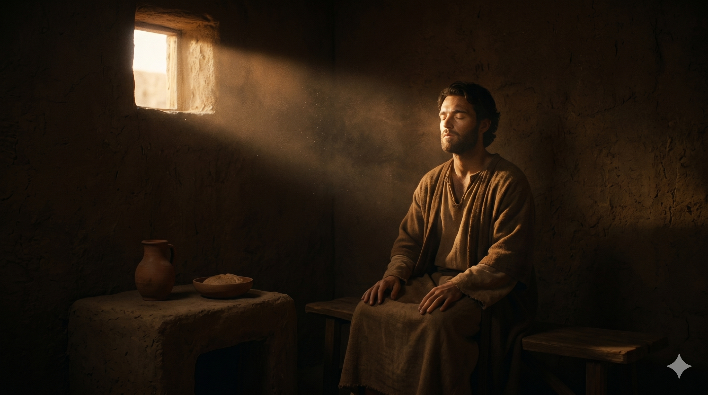

다메섹으로 향하는 길 위의 정오, 한 청년 사울이 말에서 떨어져 두 손으로 흙을 짚은 채 무릎을 꿇고 있다. 그 위로 정오의 햇빛보다 더 밝은 한 빛이 쏟아져 내려, 그의 두 눈을 가리고 그의 어깨 위로 무겁고도 따뜻하게 머문다. 박해자의 칼을 든 손이 흙 위에 떨리는 그 한 자리에서, 한 사도의 일생이 시작되는 거룩한 침묵.
사울이 주의 제자들에 대하여 여전히 위협과 살기가 등등하여 대제사장에게 가서 다메섹 여러 회당에 가져갈 공문을 청하니 이는 만일 그 도를 따르는 사람을 만나면 남녀를 불문하고 결박하여 예루살렘으로 잡아오려 함이라 사울이 길을 가다가 다메섹에 가까이 이르더니 홀연히 하늘로부터 빛이 그를 둘러 비추는지라 땅에 엎드러져 들으매 소리가 있어 이르시되 사울아 사울아 네가 어찌하여 나를 박해하느냐 하시거늘 대답하되 주여 누구시니이까 이르시되 나는 네가 박해하는 예수라 — 사도행전 9:1–5
사울 — 후에 바울이 될 한 청년은 당시 가장 열심 있는 박해자였습니다. 스데반의 죽음 곁에 그의 이름이 처음 등장한 이후(행 7:58), 그는 "주의 제자들에 대하여 여전히 위협과 살기가 등등"한 한 사람으로 자라가고 있었습니다(행 9:1). 그가 다메섹으로 가고 있던 이유는 단 하나 — 그곳에 흩어져 있는 그리스도인들을 결박하여 예루살렘으로 잡아오기 위함이었습니다. 그의 가슴 안에는 한 가지 신념만이 가득했습니다 — "나는 하나님을 위해 한 일을 하고 있다." 그러나 가장 무서운 어둠은 자기가 어둠인 줄 모르는 어둠입니다. 사울이 정오의 햇빛 아래 가장 확신에 차 다메섹 가까이 이르렀을 그 순간, 정오의 햇빛보다 더 밝은 한 빛이 하늘에서 그를 둘러 비추었습니다(행 9:3). 가장 밝은 시간에 가장 밝은 빛을 만난 한 사람 — 그 강도의 차이가 그를 단숨에 땅에 엎드러뜨렸습니다.
엎드러진 흙 위로 한 음성이 들립니다 — "사울아 사울아 네가 어찌하여 나를 박해하느냐"(행 9:4). 이 한 마디가 박해자의 신학 전체를 한순간에 무너뜨립니다. 사울은 지금까지 자기가 박해해 온 대상이 한 종교 운동, 한 이단 분파, 한 그룹의 사람들이라고 생각하고 있었습니다. 그러나 그 음성은 자기 자신을 "나"라고 부르고 있습니다 — "네가 어찌하여 '나를' 박해하느냐." 한 그리스도인을 한 대 때리는 일이 하늘에 계신 한 분 자신을 한 대 때리는 일이었다는 진실. 사울은 자기가 박해해 온 사람들을 단 한 순간도 "주님과 한 몸"이라고 생각해 본 적이 없었습니다. 그러나 그 한 마디 안에서, 그는 자기가 평생 알지 못했던 한 가지를 비로소 보았습니다 — 그리스도와 그분의 사람들 사이에 한 줌의 틈도 없다는 사실. 가장 가까이 박해해 온 그 사람들 안에 사실은 그분 자신이 함께 계셨다는 그 충격적 진실. 그리고 떨리는 입술로 그가 한 마디로 답합니다 — "주여 누구시니이까"(행 9:5). 박해자의 입에서 처음으로 나온 그 호칭 — "주여" — 이 한 마디 안에 이미 한 사도의 일생이 잉태되고 있었습니다.

다메섹의 어두운 한 방, 두 눈을 잃고 사흘간 음식과 물을 끊은 한 사람의 얼굴. 닫힌 두 눈꺼풀 위로 한 줄기 빛이 부드럽게 머무르고, 그 안쪽 가장 깊은 자리에서는 한 일생이 처음부터 다시 쓰여지고 있다. 가장 어두운 한 방이 가장 거룩한 한 산실(産室)이 되는 침묵의 사흘.
바울의 한 도상의 한 새벽이 우리에게 가장 깊이 가르치는 한 가지가 있습니다 — 가장 무서운 어둠은, 자기가 어둠인 줄 모르는 어둠입니다. 사울은 평생 "나는 하나님을 위해 한 일을 하고 있다"는 한 확신 안에 살고 있었습니다. 그 확신이 너무 두꺼워서, 정오의 햇빛 아래에서도 자기 가슴 안쪽의 어둠을 보지 못했습니다. 우리는 종종 자기 신념이 너무 강하기에, 자기 안의 어둠을 보지 못한 채 한 평생을 살아갑니다. 오늘 한 번 정직하게 자기를 살피십시오 — "나는 정말 하나님 편에 서 있는가, 아니면 내가 하나님이라 부르는 한 우상의 편에 서 있는 것인가." 가장 거룩한 사람은 자기 안의 어둠을 한 번도 본 적이 없는 사람이 아니라, 그 어둠을 가장 정직하게 본 후 한 줄기 빛 앞에 무릎을 꿇은 사람입니다. 그 무릎 꿇음 위에 사도가 잉태됩니다.
또 한 가지 — 그 한 음성 "네가 어찌하여 나를 박해하느냐"는 오늘 우리에게도 똑같이 들리는 한 마디입니다. 우리는 종종 한 형제의 마음에 한 마디 비수를 꽂으면서, 그것이 한 사람에게만 닿는다고 생각합니다. 한 자매의 어깨를 무겁게 누르면서, 그것이 한 사람만의 일이라고 생각합니다. 그러나 그분은 오늘도 우리 곁에서 그 음성을 들려주십니다 — "네가 어찌하여 '나를' 사랑하지 않느냐. 네가 어찌하여 '나를' 외면하느냐." 한 형제 한 자매와 그분 사이에 한 줌의 틈도 없습니다. 한 사람에게 내미는 따뜻한 한 손이 그분의 손을 잡는 일이고, 한 사람에게 외면한 한 등이 그분의 등을 외면한 일입니다. 오늘 당신이 가장 마지막으로 한 사람을 외면했던 그 자리로 돌아가, 한 번 정직하게 그 사람의 얼굴을 다시 보십시오. 그 얼굴 너머로 그분의 얼굴이 함께 당신을 보고 계시다는 한 진실이, 다메섹 도상의 한 빛처럼 당신을 한 번 더 무릎 꿇게 할 것입니다.
가장 무서운 어둠은, 자기가 어둠인 줄 모르는 어둠입니다.
그분과 그분의 사람들 사이에 한 줌의 틈도 없습니다 — 한 형제를 외면한 등이 그분의 등을 외면한 등입니다.
오늘, 정오의 빛 앞에 한 번 무릎을 꿇으십시오 — 그 자리에서 한 사도가 잉태됩니다.